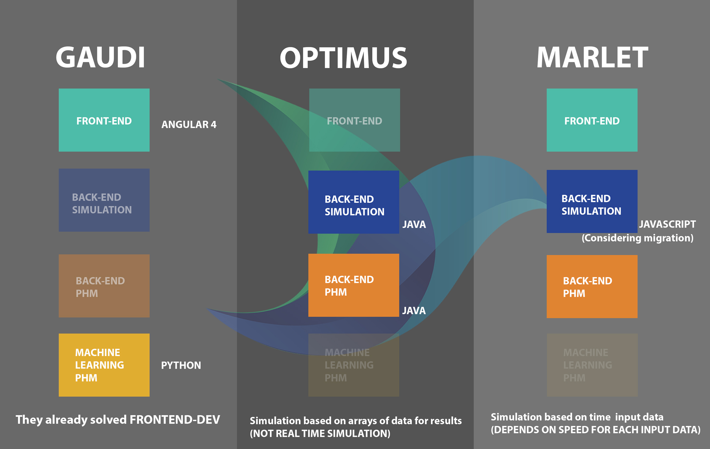

24/03/2018
NEGOTIATION PROCESS
1- Teams can stay with a single database structure (common protocols), in this approach we only share data and produce three different solutions
2- Teams can merge to a single group, in this approach teams would need to split in global roles (iagile, Global product owners, Global scrum master, Scrum coach?), developers should split in different skill groups(Frontend department, backend department, Simulation department,Machine learning)
Iagile process
- 1. Development teams are the most relevant assets in the production process, but their activity has to be accompanied by a set of objective, real-time, noninvasive measures of effectiveness and performance agreed upon by team members and fully understandable by the customer. The set of measures must cover the most relevant aspects of the product as indicated by the user/stakeholder priorities (safety, security, quality, etc.). The first users of the measures are the team members themselves. The measures are collected and displayed in a software development virtual control room. Reports are automatically generated and sent to all the relevant community members.
- 2. The traditional role of product owner (PO) is shared by the global product owner board instead of being covered by a single individual. The GPO always includes a customer stakeholder representative, the most relevant application domain experts, and the teams POs. The team POs are responsible for team synchronization and feedback, which is an important feature to ensure the teams are always aligned in their production objectives and schedules.
- 3. The scrum master (SM) role in iAgile has been reinforced and has acquired a program management task. The SM has no decision power over the team member (in fact, scrum masters are themselves team members), but the reports the SM produces are the only means to assess the development status and the team performance. Every report is shared with the team members before reaching the GPOs and the stakeholders.
- 4. The skills of the technical team members are accurately scrutinized during the preliminary team building activities. The capability of working in parallel with subject matter experts not necessarily having a software engineering background is a key factor for selection of the team members. The developers are supposed to apply extended “pair programming” with asymmetric roles where the second programmer in the pair can be a security or quality expert. The technical growth of the team members is implemented throughout the whole production process and obtained by the insertion of “knowledge acquisition user stories” in the product backlog. Asymmetric pair programming in particular is not commonly used in scrum.
- 5. A new role was added to the process: scrum coach. This role is responsible for keeping track of the skills matrix in the development team and informing the asymmetric pair programming process. In standard scrum development, the team has no skill differentiation. In our environment, however, there are a variety of skills that coalesce. They come from the unique mix of consultants and armed forces personnel needed to be able to tackle the complexity of user requirements and the context within which the armed forces operate today. Not keeping track of the team’s skill set would be dangerous because it could result in the misunderstanding of the tacit assumptions that often are an integral part of user stories.
- 6. A network of all relevant stakeholders (decision makers, top users, and application domain experts) is established at the project start and managed by the GPO as a professional social network. The network is used to share all the projectrelevant information and is consulted when preparing all major project decisions.
- 7. All the scrum-derived “rituals” (stand-up meetings, sprint planning, reviews, and deliveries) are documented in electronic form or taped.
- 8. The reconciliation of the roles played in iAgile and the roles played as members of the armed forces needs to be addressed strongly and decisively through change management practices. These include, for example, a top-level commitment, in our case coming directly from the Army Chief of Staff; a clear sense of urgency, which in the Army is easier to instill; and a clear identification of the final outcome, which generates the motivation to achieve such outcome and also provides a clear, measurable target whose achievement can be detected and measured unequivocally [14]. This last point merits some further elaboration. Often, project managers define the final outcome in terms of percentage of implementation of the product’s requirements and deviation from the planned budget. In our case, however, the outcome is defined in terms of costs, customer satisfaction, and quality. These project objectives are independent of the method and tools used to manage the project and can be defined unequivocally while allowing uncertainty about requirements and the development process, which is the staple of agile development methods.
SO PROVIDE VIA TELEGRAM YOUR FEEDBACK with #marletsplit
EXAMPLE: #marletsplit I think we (should/should not) split the groups because...
23/03/2018
Announcement

Announcement
The importance of next meeting (and another reason for encourage you all people to assist) is to communicate results of today's meeting with other groups. As you might recall, next stage of Software Architecture Project we must evaluate possibility of aggregate our work in progress to other teams' solutions. For this integration early in the morning we have presented status of our SW, even if we decide not to work as a bigger team there's work to do (SPRINT 4). However, since Integration provides several advantages to final results it is highly probable that other groups agree to Messina's alternative (One big team).
In addition the adoption of this new schema will create new roles: (Global) Product Owner, Scrum Master and Architect (Please refer to slides). Finally, according to actual status of each project, people will be organized on a few (internal) teams, such as: Front-end, Back-end development and Machine Learning , so be prepared. For this purpose, other team's representatives have asked information about your background and skills.